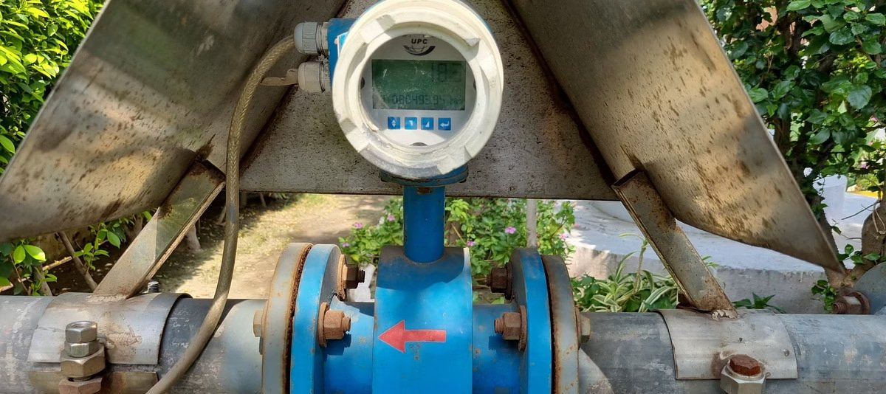
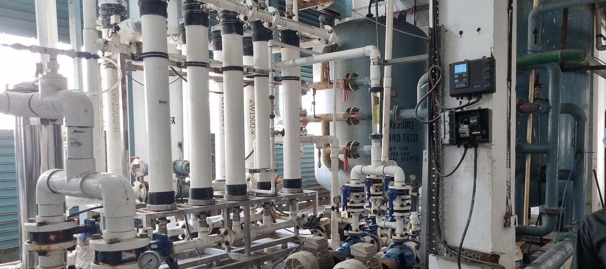
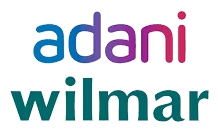
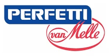
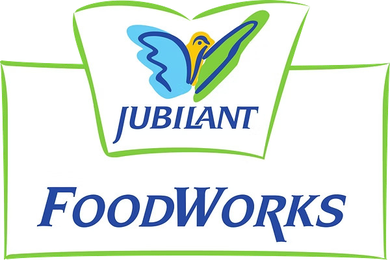
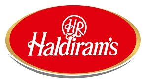

Mr. Satish K Singh
Managing Director
CGWA Certified Water Auditor, Lead Auditor ISO 14001 and Environmentalist
15+ years of experiencePioneering sustainable water management: expert consultancy for water audits and compliance under CGWA guidelines, Ministry of Jal Shakti.
Bharat Environment & Compliance Services (BECS) is a premier consultancy firm specializing in water audits, water resource management, and environmental compliance. We support industries, institutions, and commercial establishments in meeting the guidelines of the Central Ground Water Authority (CGWA) under the Ministry of Jal Shakti, Government of India.
BECS was founded to promote sustainable water use. Our hydrogeologists, environmental engineers, auditors, and policy experts bring over 15 years of cumulative hands-on experience to every project, delivering tailored, technically sound, and regulatory-compliant solutions.


To deliver precise, data-driven, and actionable water audit and management services that ensure regulatory compliance and promote sustainable groundwater use.
To be India’s most trusted partner for water auditing and environmental compliance solutions.
These values guide our approach to environmental responsibility, regulatory compliance, and sustainable resource management.
Ethical practices and reliable reporting in every engagement.
Environmentally responsible solutions with a strong commitment to regulatory integrity.
High professional standards through accurate audits, continuous learning, and best industry practices.
Tailored, technically sound solutions shaped around each client’s operations and compliance needs.
Modern tools and data analysis that improve water efficiency, and the flexibility to keep pace with changing regulations.
Water audit and compliance support for industries, mines, institutions, and infrastructure projects.

Comprehensive audits in line with the CGWA Notification (2020 and latest amendments). We quantify water use, losses, and recycling, and recommend practices for conservation and efficiency.
Studies of the impact of groundwater extraction, supported by mapping and hydrogeological studies using GIS technologies.
Design, assessment, and auditing of rainwater harvesting (RWH) structures as per regulatory norms.
Detailed reports for obtaining CGWA NOCs, flow meter supply, and compliance audits for industries, mining, infrastructure, and institutions.
Workshops and training programs on water management and regulatory compliance awareness.
From the first audit to NOC support and implementation strategy, one team covers every step.
Deep understanding of CGWA guidelines, amendments, and procedural intricacies.
Certified auditors, hydrogeologists, environmental engineers, and sustainability professionals.
From audits to NOC support and implementation strategies, we cover every step.
Beyond compliance, we help organizations adopt sustainable water management practices.
Advanced tools including remote sensing, GIS mapping, water flow metering, and digital data logging.
Capability to deliver projects across all states and union territories.
Five steps, from the first data review to follow-up with the regulator.
Data collection on water sources, consumption, and disposal, and a review of existing NOCs and permits.
Physical verification and metering of water usage points, with quality and quantity assessment.
Identifying inefficiencies, wastage, and non-compliance.
A comprehensive audit report aligned with CGWA formats and compliance checklists, plus a water conservation action plan.
Assistance with submission to CGWA or State Ground Water Authorities, and follow-up until approval or renewal.
The auditors, environmental professionals, and engineers behind every BECS project.
Managing Director
CGWA Certified Water Auditor, Lead Auditor ISO 14001 and Environmentalist
15+ years of experienceTechnical Head – Water Resources
Lead Auditor ISO 14001, Environmental Auditor, Safety Auditor – RLI Faridabad
16+ years of experienceCGWA Certified Water Professional
35+ years of experienceCivil Officer
Civil Engineering; expert in pond rejuvenation and rainwater harvesting and planning
8+ years of experienceThe credentials behind every audit and compliance report we deliver.
Registered Water Auditor certified by the Central Ground Water Authority, Ministry of Jal Shakti, Government of India.
Certified for Quality Management System.
Member of the Bureau of Indian Standards (BIS) and the Indian Science Congress (ISC).
Registered Water Auditor Panel, Uttar Pradesh Ground Water Department.
Industries and institutions that rely on BECS for water audits and compliance.




Also served: Economic Explosives Limited and AICA Laminates.
Share your site details and we will outline the audit and CGWA NOC steps for your project.